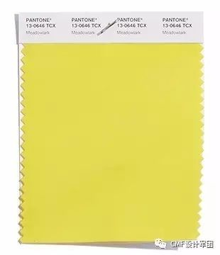
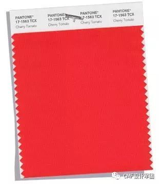
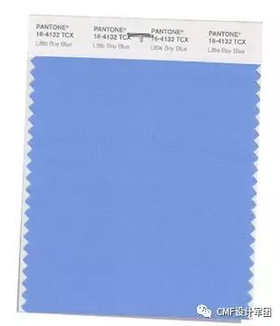

The bold and lively Meadowlark, a confident and outgoing bright yellow shade highlights the spring 2018 season, glistening with joy and illuminating the world around us.这个大胆生动、自信外向的鲜明黄色调突显2018春夏季节，闪烁着欢乐，照亮我们的周遭。

Impulsive Cherry Tomato is a tempestuous orangey red that exudes heat and energy.Demanding attention, this courageous, never to be ignored, shade is viscerally alive.任性的樱桃番茄红是狂烈的偏橘红色，散发着热量与能量。这个勇猛、抢眼的颜色天生充满活力，让人无法忽视。

With the expectation of the clear blue sky, Little Boy Blue is no longer for little boys only. Suggestive of expansiveness and continuity, this azure blue shade reassures us with its promise of a new day.小男孩蓝带着对晴空蓝天的期待，已不再是小男孩的专用色。这个天蓝的色泽意味着广阔与延续，承诺我们崭新的一天。
